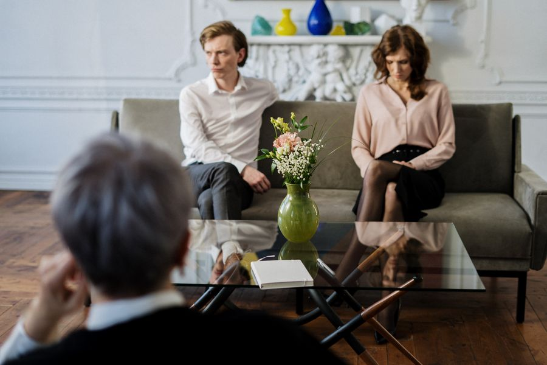
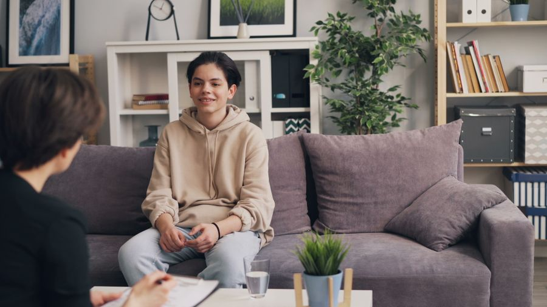

תחומי טיפול
במה אפשר לעזור לך?
כל תהליך מתחיל בהקשבה - ולכל אדם נבנית תוכנית משלו. אלו ארבעת תחומי הליווי המרכזיים בדרך לשינוי אמיתי.

טיפול זוגילזוגות וליחידים המתמודדים עם אתגרים במערכת היחסים, אך לא רק במצבי משבר:
- טיפול זוגי לבני זוג
- קשיי זוגיות טרום נישואין
- זוגיות ותקשורת
- טיפול בזוגיות רעילה
- לא מצליחים למצוא זוגיות

טיפול בילדים ונוערליווי רגשי לילדים ונוער, בשיתוף מלא של ההורים:
- טיפול בקשב וריכוז
- ויסות רגשי
- טיפול רגשי בילדים
- שינוי דפוסי התנהגות
- בעיות חברתיות
 אימון אישי
אימון אישי
להוביל את החיים במקום להיגרר אחריהם:
- התפתחות אישית
- קבלת החלטות
- טיפול בחרדות
- תקיעות בחיים
- שינוי דפוסים
טיפולים נוספים
טיפול רגשי ממוקד למגוון רחב של התמודדויות:
- טראומה ופוסט טראומה
- התמודדות עם לחץ
- ביטחון עצמי ומשברים
- פוביות, פחדים והתמכרויות
- העצמה נשית
- השמת גבולות